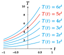

Ordinary differential equations Ordinary Differential Equations Often in Physics, Chemistry, Biology, Geometry, etc there arise equations that relate a function with its derivative, or successive derivatives. Definition - Ordinary differential equation. An ordinary differential equation (O.D.E.) is a equation that relates an independent variable $x$, a function $y(x)$ that depends on $x$, and the successive derivatives of $y$, $y’,y’’,\ldots,y^{(n)}$; it can be written as $$F(x, y, y’, y’’,\ldots, y^{(n)})=0.$$ The order of a differential equation is the greatest order of the derivatives in the equation. Example. The equation $y’’’+sen(x)y’=2x$ is a differential equation of order 3. Deducing a differential equation To deduce a differential equation that explains a natural phenomenon is essential to understand what a derivative is and how to interpret it. Example. Newton’s law of cooling states “The rate of change of the temperature of a body in a surrounding medium is proportional to the difference between the temperature of the body $T$ and the temperature of the medium $T_a$.” The rate of change of the temperature is the derivative of temperature with respect to time $dT/dt$. Thus, Newton’s law of cooling can be explained by the differential equation $$\frac{dT}{dt}=k(T-T_a),$$ where $k$ is a proportionality constant. Solution of an ordinary differential equation Definition - Solution of an ordinary differential equation. Given an ordinary differential equation $F(x,y,y’,y’’,\ldots,y^{(n})=0$, the function $y=f(x)$ is a solution of the ordinary differential equation if it satisfies the equation, that is, if $$F(x,f(x), f’(x), f’’(x),\ldots, f^{(n}(x))=0.$$ The graph of a solution of the ordinary differential equation is known as integral curve. Solving an ordinary differential equations consists on finding all its solutions in a given domain. For that integral calculus is required. The same manner than the indefinite integral is a family of antiderivatives, that differ in a constant term, after integrating an ordinary differential equation we get a family of solutions that differ in a constant. We can get particular solutions giving values to this constant. General solution of an ordinary differential equation Definition - General solution of an ordinary differential equation. Given an ordinary differential equation $F(x,y,y’,y’’,\ldots,y^{(n})=0$ of order $n$, the general solution of the differential equation is a family of functions $$y =f (x,C_1,\ldots,C_n),$$ depending on $n$ constants, such that for any value of $C_1,\ldots,C_n$ we get a solution of the differential equation. For every value of the constant we get particular solution of the differential equation. Thus, when a differential equation can be solved, it has infinite solutions. Geometrically, the general solution of a differential equation corresponds to a family of integral curves of the differential equation. Often, it is common to impose conditions to the solutions of a differential equation to reduce the number of solutions. In many cases, these conditions allow to determine the values of the constants in the general solution to get a particular solution. First order differential equations In this chapter we are going to study first order differential equations $$F(x,y,y’)=0.$$ The general solution of a first order differential equation is $$y = f (x,C),$$ so to get a particular solution from the general one, it is enough to set the value of the constant $C$, and for that we only need to impose one initial condition. Definition - Initial value problem. The group consisting of a first order differential equation and an initial condition is known as initial value problem: $$ \begin{cases} F(x,y,y’)=0, & \mbox{First order differential equation;} \newline y(x_0)=y_0, & \mbox{Initial condition.} \end{cases} $$ Solving an initial value problem consists in finding a solution of the first order differential equation that satisfies the initial condition. Example. Recall the first order differential equation of the Newton’s law of cooling, $$\frac{dT}{dt}=k(T-T_a),$$ where $T$ is the temperature of the body and $T_a$ is the temperature of the surrounding medium. It is easy to check that the general solution of this equation is $$T(t) = Ce^{kt}+T_a.$$ If we impose the initial condition that the temperature of the body at the initial instant is $5$ ºC, that is, $T(0)=5$, we have $$T(0) = Ce^{k\cdot0}+T_a = C+T_a = 5,$$ from where we get $C=5-T_a$, and this give us the particular solution $$T(t) = (5-T_a)e^{kt}+T_a.$$ Integral curve of an initial value problem Example. If we assume in the previous example that the temperature of the surrounding medium is $T_a=0$ ºC and the cooling constant of the body is $k=1$, the general solution of the differential equation is $$T(t)=Ce^t,$$ that is a family of integral curves. Among all of them, only the one that passes through the point $(0,5)$ corresponds to the particular solution of the previous initial value problem.  Existence and uniqueness of solutions Theorem - Existence and uniqueness of solutions of a first order ODE. Given an initial value problem $$\begin{cases} y’=F(x,y);\newline y(x_0)=y_0; \end{cases} $$ if $F(x,y(x))$ is a function continuous on an open interval around the point $(x_0,y_0)$, then a solution of the initial value problem exists. If, in addition, $\frac{\partial F}{\partial y}$ is continuous in an open interval around $(x_0,y_0)$, the solution is unique. Although this theorem guarantees the existence and uniqueness of a solution of a first order differential equation, it does not provide a method to compute it. In fact, there is not a general method to solve first order differential equations, but we will see how to solve some types: Separable differential equations Homogeneous differential equations Linear differential equations Separable differential equations Definition - Separable differential equation. A separable differential equation is a first order differential equation that can be written as $$y’g(y)=f(x),$$ or what is the same, $$g(y)dy=f(x)dx,$$ so the different variables are on different sides of the equality (the variables are separated). The general solution for a separable differential equation comes after integrating both sides of the equation $$\int g(y)\,dy = \int f(x)\,dx+C.$$ Example. The differential equation of the Newton’s law of cooling $$\frac{dT}{dt}=k(T-T_a),$$ is a separable differential equation since it can be written as $$\frac{1}{T-T_a}dT=k\,dt.$$ Integrating both sides of the equation we have $$\int \frac{1}{T-T_a}\,dT=\int k\,dt\Leftrightarrow \log(T-T_a)=kt+C,$$ and solving for $T$ we get the general solution of the equation $$T(t)=e^{kt+C}+T_a=e^Ce^{kt}+T_a=Ce^{kt}+T_a,$$ rewriting $C=e^C$ as an arbitrary constant. Homogeneous differential equations Definition - Homogeneous function. A function $f(x,y)$ is homogeneous of degree $n$, if it satisfies $$f(kx,ky)= k^nf(x,y),$$ for any value $k\in \mathbb{R}$. In particular, a homogeneous function of degree $0$ always satisfies $$f(kx,ky)=f(x,y).$$ Setting $k=1/x$ we have $$f(x,y)=f\left(\frac{1}{x}x,\frac{1}{x}y\right)=f\left(1,\frac{y}{x}\right)=g\left(\frac{y}{x}\right).$$ This way, a homogeneous function of degree $0$ always can be written as a function of $u=y/x$: $$f(x,y)=g\left(\frac{y}{x}\right)=g(u).$$ Definition - Homogeneous differential equation. A homogeneous differential equation is a first order differential equation that can be written as $$y’=f(x,y),$$ where $f(x,y)$ is a homogeneous function of degree $0$. We can solve a homogeneous differential equation by making the substitution $$u=\frac{y}{x}\Leftrightarrow y=ux,$$ so the equation becomes $$u’x+u=f(u),$$ that is a separable differential equation. Once solved the separable differential equation, the substitution must be undone. Example. Let us consider the following differential equation $$4x-3y+y’(2y-3x)=0.$$ Rewriting the equation in this way $$y’=\frac{3y-4x}{2y-3x}$$ we can easily check that it is a homogeneous differential equation. To solve this equation we have to do the substitution $y=ux$, and we get $$u’x+u=\frac{3ux-4x}{2ux-3x}=\frac{3u-4}{2u-3}$$ that is a separable differential equation. Separating the variables we have $$u’x=\frac{3u-4}{2u-3}-u=\frac{-2u^2+6u-4}{2u-3}\Leftrightarrow \frac{2u-3}{-2u^2+6u-4}\,du=\frac{1}{x}\,dx.$$ Now, integrating both sides of the equation we have $$ \renewcommand{\arraystretch}{2} \begin{array}{c} \displaystyle \int \frac{2u-3}{-2u^2+6u-4}\,du=\int \frac{1}{x}\,dx \Leftrightarrow -\frac{1}{2}\log|u^2-3u+2|=\log|x|+C \Leftrightarrow\newline \Leftrightarrow \log|u^2-3u+2|=-2\log|x|-2C, \end{array} $$ then, applying the exponential function to both sides and simplifying we get the general solution $$u^2-3u+2=e^{-2\log|x|-2C}=\frac{e^{-2C}}{e^{\log|x|^2}}=\frac{C}{x^2},$$ rewriting the constant $K=e^{-2C}$. Finally, undoing the initial substitution $u=y/x$, we arrive at the general solution of the homogeneous differential equation $$\left(\frac{y}{x}\right)^2-3\frac{y}{x}+2=\frac{K}{x^2}\Leftrightarrow y^2-3xy+2x^2=K.$$ Linear differential equations Definition - Linear differential equation A linear differential equation is a first order differential equation that can be written as $$y’+g(x)y = h(x).$$ To solve a linear differential equation we try to write the left side of the equation as the derivative of a product. For that we multiply both sides by the function $f(x)$, such that $$f’(x)=g(x)f(x).$$ Thus, we get $$ \begin{array}{c} y’f(x)+g(x)f(x)y=h(x)f(x)\newline \Updownarrow\newline y’f(x)+f’(x)y=h(x)f(x)\newline \Updownarrow\newline \dfrac{d}{dx}(yf(x))=h(x)f(x) \end{array} $$ Integrating both sides of the previous equation we get the solution $$yf(x)=\int h(x)f(x)\,dx+C.$$ On the other hand, the unique function that satisfies $f’(x)=g(x)f(x)$ is $$f(x)=e^{\int g(x)\,dx},$$ so, substituting this function in the previous solution we arrive at the solution of the linear differential equation $$ye^{\int g(x)\,dx}=\int h(x) e^{\int g(x)\,dx}\,dx+C,$$ or what is the same Solution of a linear differential equation. $$y=e^{-\int g(x)\,dx}\left(\int h(x)e^{\int g(x)\,dx}\,dx+C\right).$$ Example. If in the differential equation of the Newton’s law of cooling the temperature of the surrounding medium is a function of time $T_a(t)$, then the differential equation $$\frac{dT}{dt}=k(T-T_a(t)),$$ is a linear differential equation since it can be written as $$T’-kT=-kT_a(t),$$ where the independent term is $-kT_a(t)$ and the coefficient of $T$ is $-k$. Substituting in the formula of the general solution of a linear differential equation we have $$y=e^{-\int -k\,dt}\left(\int -kT_a(t)e^{\int -k\,dt}\,dt+C\right)= e^{kt}\left(-\int kT_a(t)e^{-kt}\,dt+C\right).$$ In the particular case that $T_a(t)=t$, and the proportionality constant $k=1$, the general solution of the linear differential equation is $$y=e^{t}\left(-\int te^{-kt}\,dt+C\right)=e^t(e^{-t}(t+1)+C)=Ce^t+t+1.$$ If, in addition, we know that the temperature of the body at time $t=0$ is $5$ ºC, that is, we have the initial condition $T(0)=5$, then we can compute the value of the constant $C$, $$y(0)=Ce^0+0+1=5 \Leftrightarrow C+1=5 \Leftrightarrow C=4,$$ and we get the particular solution $$y(t)=4e^t+t+1.$$ Ordinary Differential Equation Previous Integral calculus Next Several variables differentiable calculus